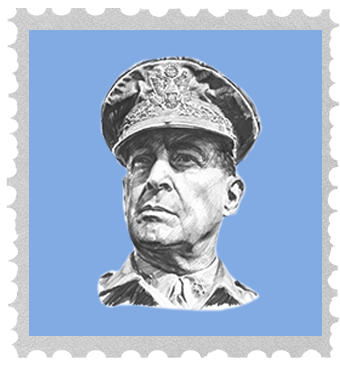

After the Japanese Occupation
In 1944, General Douglas MacArthur successfully returned to the Philippines equipped with men, weapons, and information. Fighting between the two countries would not end until Japan’s formal surrender on 2 September 1945 and by that time, the Philippines had suffered a great deal of loss and destruction.